Analyse des prix de vente de voitures
1 Extraction
La construction des sites internet évolue en permance, le code d’extraction est à mettre à jour régulièrement. Certains site peuvent bloquer l’accès via l’adresse IP après un certain nombre de visites.
Le code suivant n’a pas été nettoyé pour une exécution linéaire.
Les différentes étpaes sont:
- Extraction des marques: pour pouvoir les parcourir toutes
- Extraction des modèles de chacune des marques
- Dans chaque modèle donné, on a les années et la liste de toutes les versions
Il est possible d’obtenir une fiche technique pour avoir plus d’informations sur les voitures.
Remarque: les cotes sont définies à une date donnée, pour la base extraction, la date est aux alentours de mai 2016.
1.1 Marques
# construction des marques -------
## les marques sont copiées à la main dans la liste csv
marques=gsub(" ","+",tolower(as.vector(unlist(read.csv2("marques.csv",header=FALSE)))))
m=as.vector(unlist(read.csv2("marques.csv",header=FALSE)))
# téléchargement des marques -------
## toutes les pages des marques sont téléchargées dans le dossier toutes marques
for (i in 1:length(marques)){
Sys.sleep(4)
download.file(paste0("http://www.lacentrale.fr/cote-voitures-",marques[i],"----.html"),paste0("toutes_marques/",marques[i],".html"))
}1.2 Modèles
# listes des modèles de chaque marque -------
marques_modeles=list()
#i=118
for (i in 1:(length(marques))){
marque = htmlTreeParse(paste0("toutes_marques/",marques[i],".html"),useInternal = TRUE,encoding="utf8")
marque_liens = unlist(xpathApply(marque, '//a', xmlGetAttr,"href"))
marque_liens2=NULL
for (k in 1:length(marque_liens)){
if (substr(marque_liens[k],1,15)=="/cote-voitures-"){
marque_liens2=c(marque_liens2,marque_liens[k])}
}
marques_modeles[[i]]=unique(marque_liens2)
}
dput(marques_modeles,"marques_modeles.txt")
## comptage : juste pour savoir combien de modèles à télécharger
sum_modeles=NULL
compteur=0
for (k in 1:(length(marques))){
sum_modeles=c(sum_modeles,length(marques_modeles[[k]]))
if (length(marques_modeles[[k]])>0){
compteur=compteur+1
}
}
## voir les modèles -------
for (k in 1:(length(marques)-1)){
if (length(marques_modeles[[k]])>0){
for (l in 1:length(marques_modeles[[k]])){
print(marques_modeles[[k]][l])
}
}
}## créer les répertoires des marques -------
for (k in 1:(length(marques))){
dir.create(paste0("marques/",m[k]), showWarnings = TRUE)
}
marques[20]
## téléchargement des modèles dans dossier marques -------
for (k in 26:118){ #118
for (l in 1:length(marques_modeles[[k]])){
download.file(paste0("http://www.lacentrale.fr",(marques_modeles[[k]][l])),
paste0("marques/",m[k],"/",marques_modeles[[k]][l]))
}
}
## Listes des versions -------
head(marques_modeles)
versions=list()
for (k in 1:118){ #118
version_liens2=NULL
for (l in 1:length(marques_modeles[[k]])){
modele = htmlTreeParse(paste0("marques/",m[k],"/",marques_modeles[[k]][l]),
useInternal = TRUE,encoding="utf8")
version_liens = unlist(xpathApply(modele, '//a', xmlGetAttr,"href"))
for (i in 1:length(version_liens)){
if (substr(version_liens[i],1,15)=="/cote-voitures-"){
version_liens2=c(version_liens2,version_liens[i])}
}
}
versions[[k]]=unique(version_liens2)
}
dput(versions,"versions.txt")
ver=dget("versions.txt")
head(versions)
## créer les répertoires des versions -------
for (k in 1:(length(marques))){
dir.create(paste0("versions/",m[k]), showWarnings = TRUE)
}
## téléchargements des versions -------
## très long
for (k in 9:118){ #118
for (l in 1:length(versions[[k]])){
Sys.sleep(2)
download.file(paste0("http://www.lacentrale.fr",(versions[[k]][l])),
paste0("versions/",m[k],"/",versions[[k]][l]))
}
}1.3 Cotes
# construction liste versions -----
# à cause des redirections, refaire à partir des fichiers téléchargés
versions2=list()
for (k in 1:118){ #118
versions2[[k]]=list.files(paste0("versions/",m[k],"/"))
}
k=1
versions2
# Comptage versions ------
# avec versions
nbversions=0
nb_versions=rep(0,118)
for (k in 1:118){
nbversions=nbversions+(length(versions[[k]]))
nb_versions[k]=(length(versions[[k]]))
}
sum(nb_versions)
# compte pour versions2
nb_versions2=rep(0,118)
for (k in 1:118){
nb_versions2[k]=(length(versions2[[k]]))
}
sum(nb_versions2)
# en parallèle avec les comptages des liens des versions
versions_stat=data.frame(matrix(c(m,nb_versions2),length(m),2))
versions_stat$X2=as.numeric(as.character(versions_stat$X2))
plot(versions_stat)
versions_stat$p=versions_stat$X2/(sum(versions_stat$X2))
## extration des cotes avec une liste cotes-------
cotesliste=list()
for (k in 5:118){ #118
cotesk=NULL
for (l in 1:length(versions2[[k]])){
doc.html=htmlTreeParse(paste0("versions/",m[k],"/",versions2[[k]][l]),
useInternal = TRUE,encoding="UTF-8")
doc.text = unlist(xpathApply(doc.html, '//script', xmlValue))[23]
x=unlist(regmatches(doc.text, gregexpr("\\=.*?\\=", doc.text)))
y=NULL
for (i in 1:length(x)){
if (substr(x[i],2,4)=="new"){
y=c(y,gsub("'","",substr(gsub(";.*","",x[i]),12,nchar(x[i]))))
}
}
infos=gsub(".html","",unlist(strsplit(versions2[[k]][l],"-")))[3:7]
if (length(y)==0){
cotesk=rbindlist(list(data.table(cotesk),
data.table(matrix(c(infos,versions2[[k]][l],0,0,0,0,
gsub("\\D","",substr(x[2],regexpr("coteBrute:",x[2]),
regexpr("ss_categorie:",x[2]))),0),1,(7+length(infos))))),use.names = FALSE,fill=FALSE)
} else {
cotesk=rbindlist(list(data.table(cotesk),
data.table(cbind(matrix(rep(infos,length(y)),length(y),length(infos),byrow=T),
(matrix(unlist(strsplit(y,",")),length(y),7,byrow=T))))))
}
}
cotesliste[[k]]=cotesk
}
dput(cotesliste,"cotesliste.txt")1.4 Nettoyage
# manipulation en data table des bases -----
colnames(cotesbind)=c("marque","num","vide","annee","type","nom","n_portes","boite","carb","puissance","cote","id")
# carb : 1 essence; 2 diesel; boite : 1 auto, 2 mécanique
cotesbind$cote=as.numeric(cotesbind$cote)
cotesbind$annee=as.numeric(cotesbind$annee)
cotesbind$puissance=as.numeric(cotesbind$puissance)
hist(cotesbind$puissance,nclass=100)
table(cotesbind$puissance)
# nettoyage de la base
cotesbind[cotesbind$puissance>80,]
# cotes propres sans les liens directs
cotesp=cotesbind[cotesbind$boite!=0,]
voit=cotesp[cotesp$carb=="1",carb:="essence"]
voit=voit[voit$carb=="2",carb:="diesel"]
voit=voit[voit$boite=="1",boite:="automatique"]
voit=voit[voit$boite=="2",boite:="mecanique"]
voit=voit[voit$carb=="3",carb:="ess/GPL"]
voit=voit[voit$carb=="10",carb:="ess/bioeth"]
voit=voit[voit$carb=="8",carb:="ess/hybride"]cotes$portes=as.numeric(cotes$portes)
cotes$puissance=as.numeric(cotes$puissance)
cotes$cote_brute=as.numeric(cotes$cote_brute)
names(cotes)=c("marque","version","annee","type","modele","portes","boite","carburant","puissance","cote_brute")
cotes=data.table(do.call(rbind, lapply(data, data.frame, stringsAsFactors=TRUE)))
save(cotes,file="../data/argus/cotes_brutes.Rdata")2 Exploration
2.1 Marques
Remarque: ce ne sont les nombres de voitures fabriquées, mais les versions disponibles.
load("../data/argus/cotes_brutes.Rdata")
reorder_size <- function(x) {
factor(x, levels = names(sort(table(x))))
}
ggplot(data=cotes[cotes$marque %in% names(sort(table(cotes$marque),decreasing=TRUE)[1:30]),],
aes(reorder_size(marque),fill=type))+
geom_bar()+
coord_flip()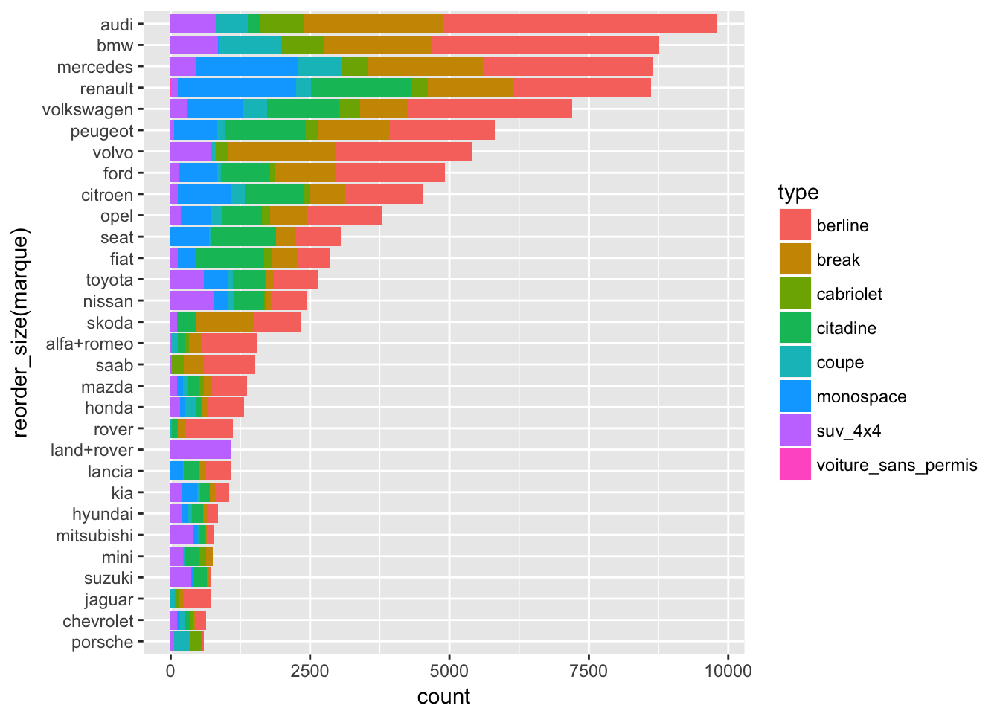
ggplot(data=cotes[cotes$marque %in% names(sort(table(cotes$marque),decreasing=TRUE)[1:30]),],
aes(reorder_size(marque),fill=type))+
geom_bar(position = "fill")+
coord_flip()
ggplot(data=cotes[cotes$marque %in% names(sort(table(cotes$marque),decreasing=TRUE)[1:30]),],
aes(reorder_size(marque),fill=annee))+
geom_bar()+
coord_flip()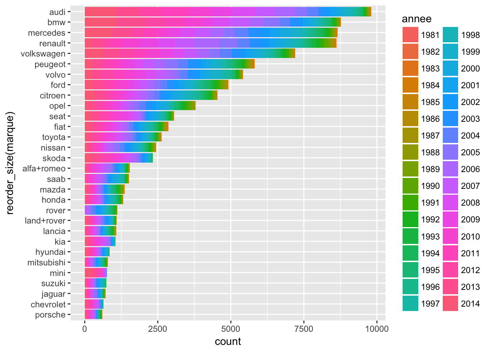
ggplot(data=cotes[cotes$marque %in% names(sort(table(cotes$marque),decreasing=TRUE)[1:30]),],
aes(reorder_size(marque),fill=annee))+
geom_bar(position = "fill")+
coord_flip()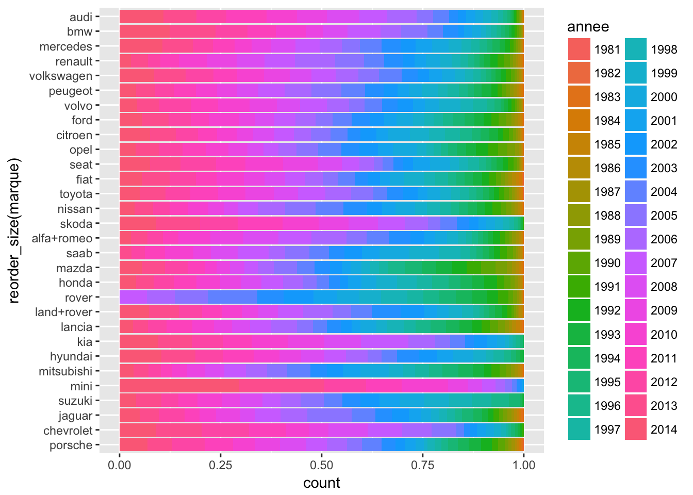
2.2 Evolutions
Remarques: les années ici sont les années de commercialisation
2.2.1 Nombres
ggplot(data=cotes,aes(annee,fill=boite))+
geom_bar()+
theme(axis.text.x = element_text(angle = 90, hjust = 0))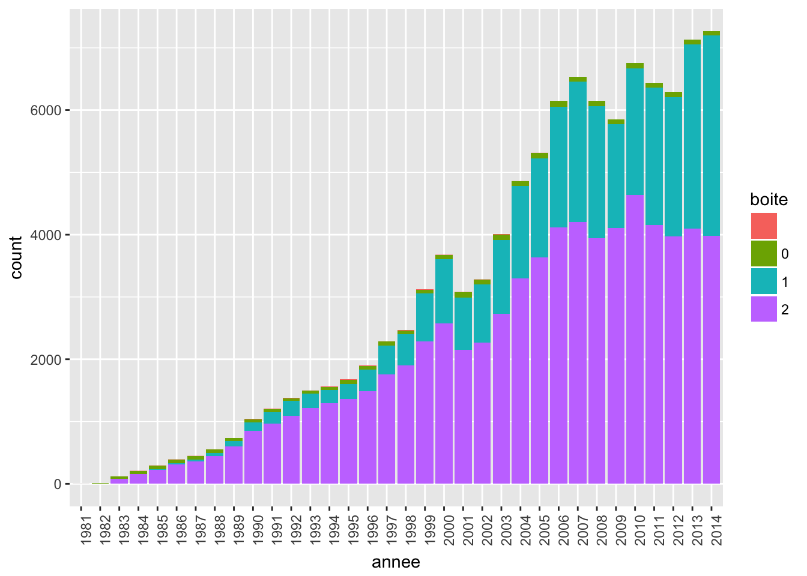
2.2.2 Boîtes de vitesse
ggplot(data=cotes,aes(annee,fill=boite))+
geom_bar(position = "fill")+
theme(axis.text.x = element_text(angle = 90, hjust = 0))
ggplot(data=cotes,aes(annee,fill=type))+
geom_bar(position = "fill")+
theme(axis.text.x = element_text(angle = 90, hjust = 0))
ggplot(data=cotes,aes(annee,fill=carburant))+
geom_bar(position = "fill")+
theme(axis.text.x = element_text(angle = 90, hjust = 0))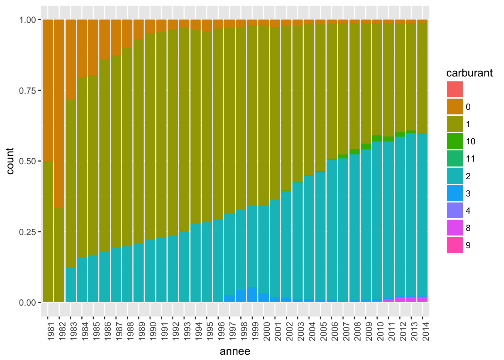
Evolution des hybrides
table(cotes[cotes$carburant==8,]$marque)##
## audi bmw cadillac fisker ford honda
## 20 34 4 6 1 80
## infiniti kia land+rover lexus mercedes mitsubishi
## 6 3 4 117 20 1
## opel peugeot porsche smart toyota volkswagen
## 8 2 11 10 87 4
## volvo
## 1ggplot(data=cotes[cotes$carburant==8 & cotes$marque %in% names(sort(table(cotes[cotes$carburant==8,]$marque),decreasing=TRUE)[1:10]),],
aes(annee,fill=marque))+
geom_bar()+
theme(axis.text.x = element_text(angle = 90, hjust = 0))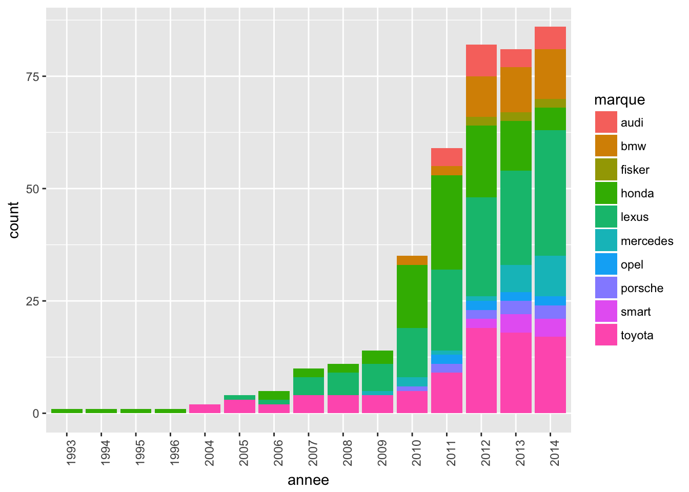
Voitures sans permis
ggplot(data=cotes[cotes$type=="voiture_sans_permis",],
aes(annee,fill=marque))+
geom_bar()+
theme(axis.text.x = element_text(angle = 90, hjust = 0))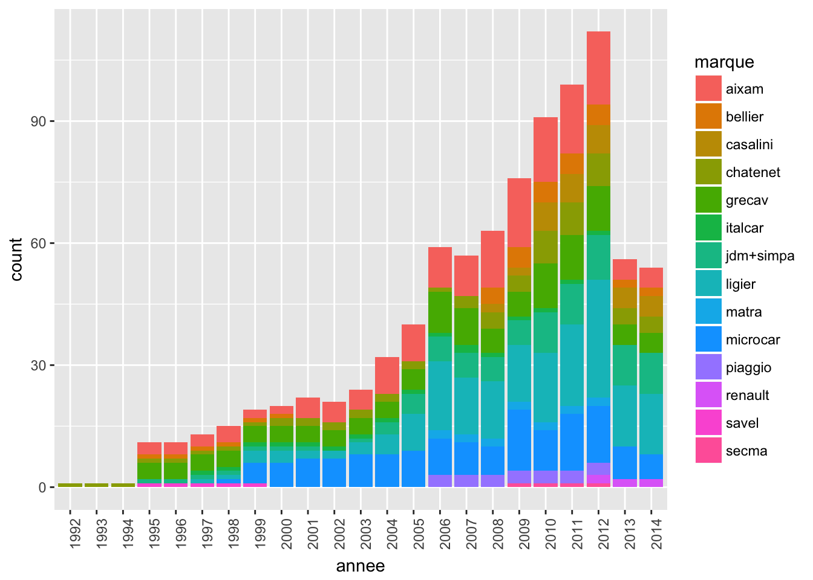
2.3 Prix
ggplot(data = cotes,aes(cote_brute,fill=type,color=type))+
geom_density(alpha=0.2)+
xlim(0,40000)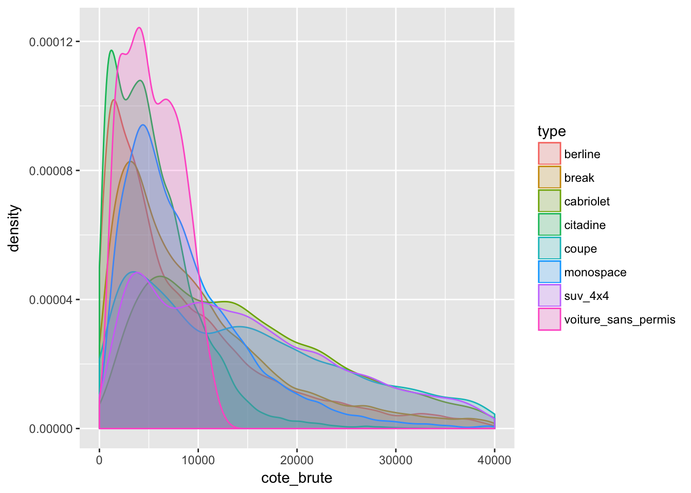
ggplot(data = cotes[cotes$cote_brute<100000 & is.na(cotes$cote_brute)==FALSE,],
aes(reorder(type,cote_brute,FUN=median),cote_brute,fill=type,color=type))+
geom_boxplot(alpha=0.2)+ylim(0,30000)+
coord_flip()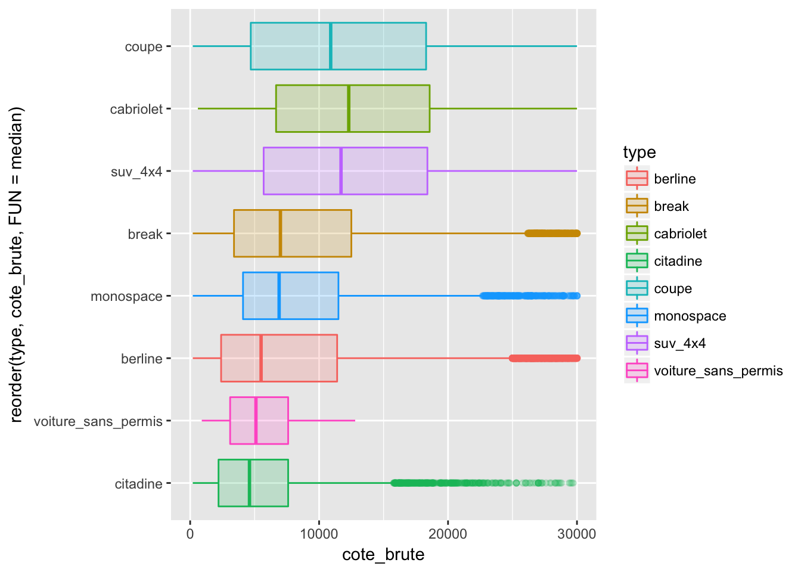
ggplot(data = cotes[cotes$cote_brute<200000 & is.na(cotes$cote_brute)==FALSE,],
aes(reorder(type,cote_brute,FUN=median),cote_brute,fill=type,color=type))+
geom_violin(alpha=0.2)+ylim(0,30000)+
coord_flip()+ stat_summary(fun.y=median, geom="point", size=2, color="red")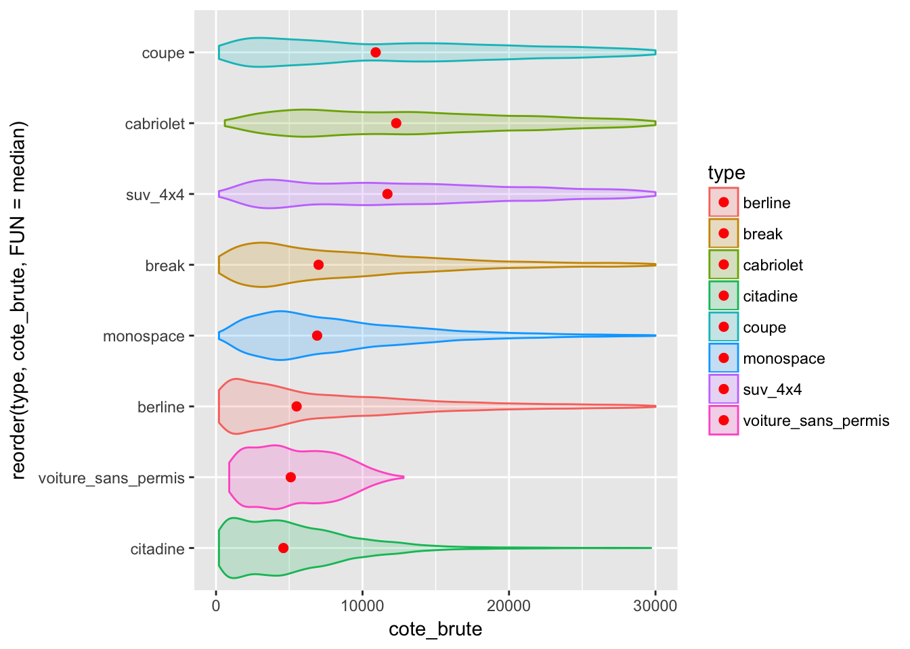
ggplot(data=cotes[cotes$puissance>0 & cotes$puissance<90 & cotes$type %in% c("berline","coupe","suv_4x4"),],
aes(annee,cote_brute))+
geom_jitter(aes(color=type))+
theme(axis.text.x = element_text(angle = 90, hjust = 0))+
geom_smooth(aes(color=type))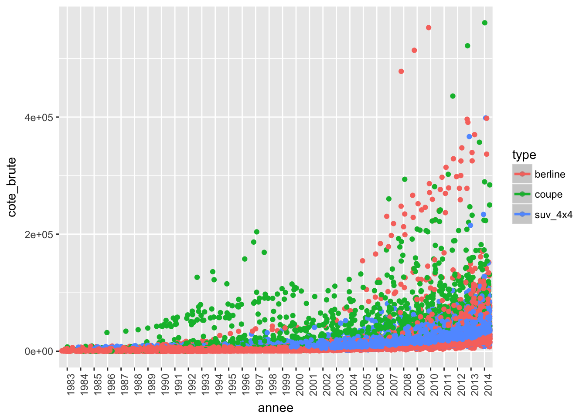
2.4 Comparasion des modèles
ggplot(data=cotes[cotes$puissance>0 & cotes$puissance<90 & cotes$version %in% c("clio","touareg"),],
aes(annee,cote_brute))+
geom_jitter(aes(color=version))+
theme(axis.text.x = element_text(angle = 90, hjust = 0))+
geom_smooth(aes(color=type))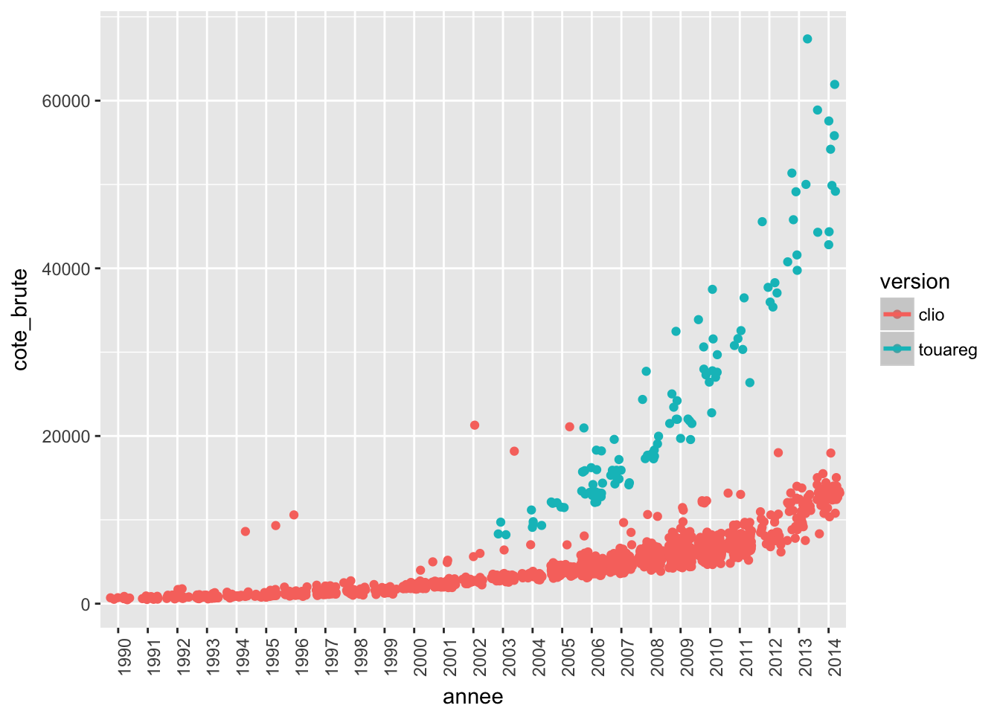
ggplot(data=cotes[cotes$puissance>0 & cotes$puissance<90 & cotes$version %in% c("clio","touareg"),],
aes(annee,cote_brute))+
geom_jitter(aes(color=version,size=puissance))+
theme(axis.text.x = element_text(angle = 90, hjust = 0))+
geom_smooth(aes(color=type))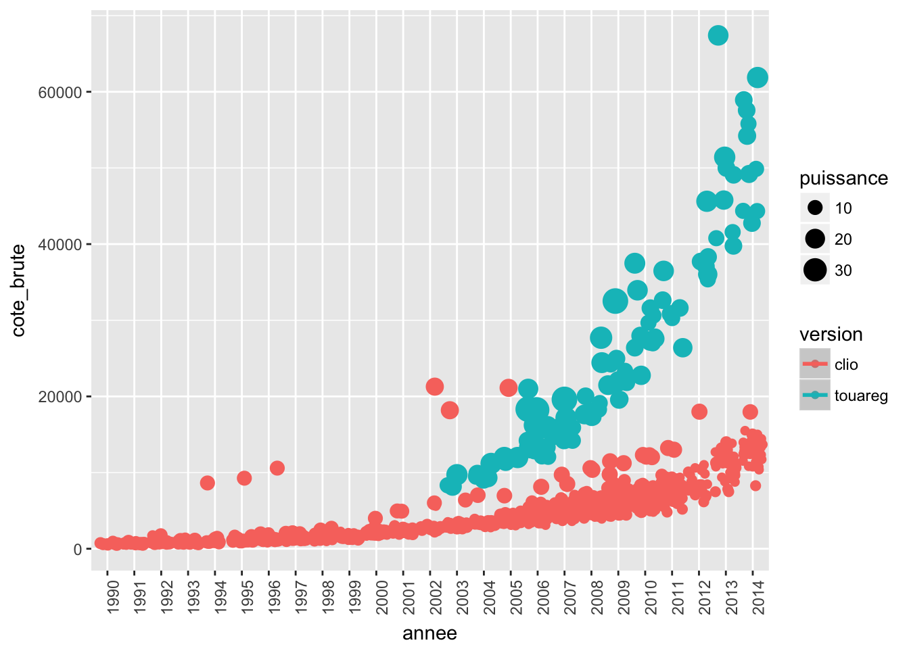
ggplot(data=cotes[cotes$puissance>0 & cotes$puissance<90 & cotes$version %in% c("clio","touareg"),],
aes(annee,cote_brute))+
geom_jitter(aes(color=version,shape=type))+
theme(axis.text.x = element_text(angle = 90, hjust = 0))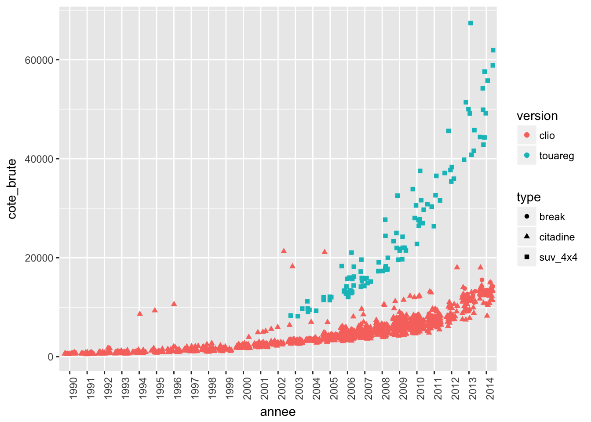
ggplot(data=cotes[cotes$puissance>0 & cotes$puissance<90 & cotes$marque %in% c("bmw","renault"),],
aes(annee,cote_brute))+
geom_jitter(aes(color=marque,shape=type))+
theme(axis.text.x = element_text(angle = 90, hjust = 0))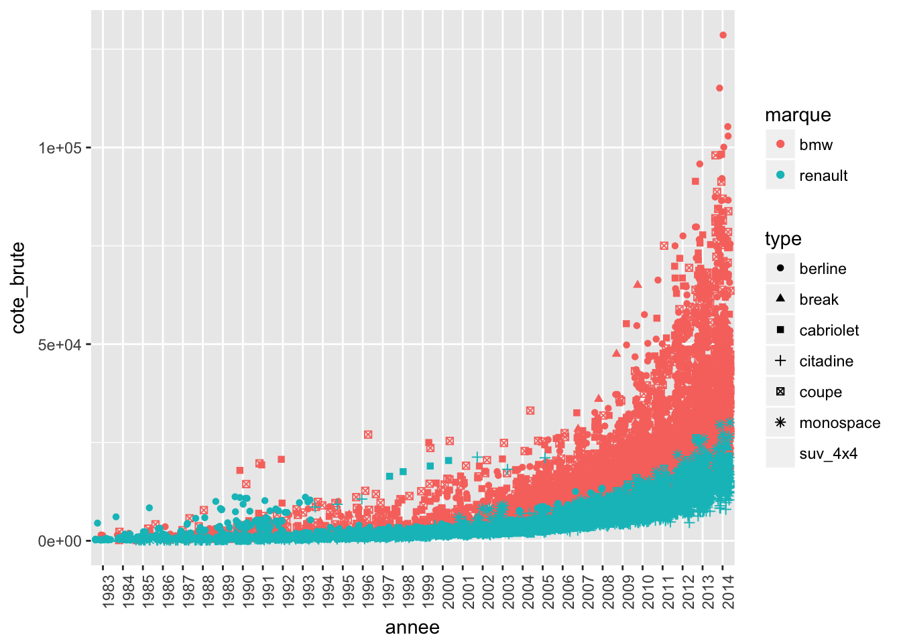
Copyright © 2016 Blog de Kezhan Shi